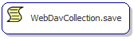
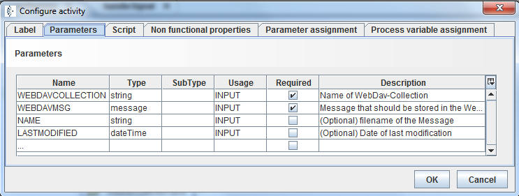

WebDavCollection.save

Topic content
Description
Store a message to a WebDavCollection.
Purpose of object
This feature stores a message to an underlying persistent message list, whereby the message list is referenced by a WebDAV channel. That WebDAV channel exposes the content over the WebDAV protocol as a file system directory, that can be used to retrieve or put messages from this WebDAV message list. Since the WebDAV channel required additional attributes for the stored message entry, the following parameters have to be supplied: NAME , LASTMODIFIED.
Create
In the process model editor open the panel named process, open the tree node message collections, select the node WebDavCollection.save and click into the process model to create a new invocation of this scriptlet.
Icon

Configuration
Label and Non functional properties
See at common configurations for activities.
Properties and Parameter assignment
The assignment sections define the assignment of variables between the script and the process model.
The following parameters are available:
Ingoing parameters:
• WEBDAVCOLLECTION Name identifying the message list
• WEBDAVMSG Message to be stored in the message list
• NAME Filename that will be displayed on the web
• LASTMODIFIED Date of last modification
Outgoing parameter:
There is no return value.
